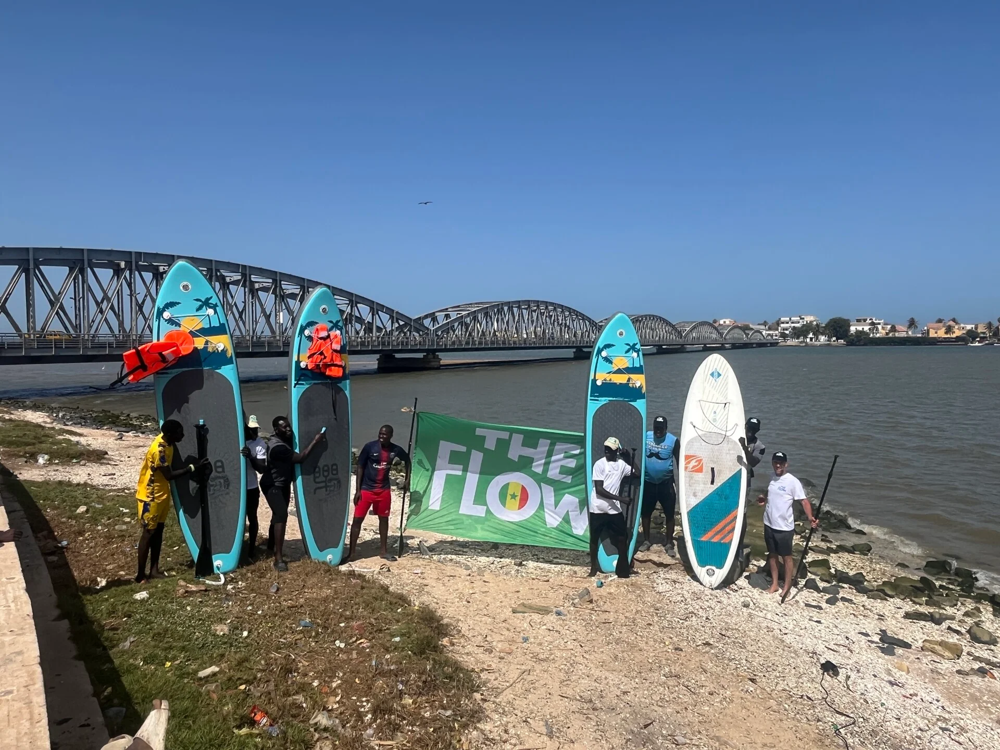
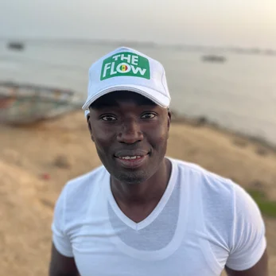
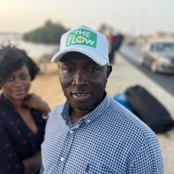
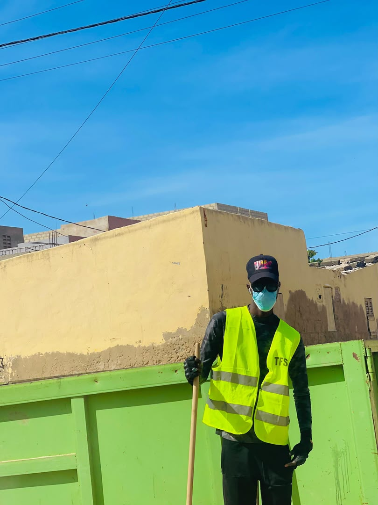

Le fleuve Sénégal comme point de départ d'un mouvement citoyen.
En mai 2025, The Flow s'est invité à Saint-Louis du Sénégal, porté par l'association The Flow Sénégal et Pape Mbaye, pour une première édition locale qui a réuni habitants, associations, sportifs et enfants autour d'un même élan : prendre soin du fleuve, tout en célébrant la vie qu'il relie.
Ce fut le début d'un mouvement : une alliance entre nature, culture et jeunesse, ancrée au cœur du delta du Sénégal.
Aujourd'hui, l'association est officiellement installée à Diamaguène, près du dispensaire Sor, à Saint-Louis. Nous agissons chaque jour pour restaurer les berges, sensibiliser les jeunes et redonner au fleuve sa place centrale dans la vie des Saint-Louisiens.
Saint-Louis, classée au patrimoine mondial de l'UNESCO, incarne l'histoire et la richesse culturelle de l'Afrique de l'Ouest. Fondée en 1659, cette ancienne capitale, surnommée la "Région du Fleuve", doit son développement à sa position stratégique sur le fleuve Sénégal.
Cependant, les berges, autrefois lieux de vie et de célébration, sont aujourd'hui jonchées de déchets. The Flow Sénégal ambitionne de changer cette réalité et de rendre au fleuve son rôle central dans la vie économique, sociale et écologique de la région.

Saint-Louis a montré la voie : The Flow peut naître partout où un fleuve inspire.
De la Seine au Sénégal, c'est le même souffle — celui d'un monde plus fluide, plus solidaire, plus vivant.
Mobiliser les citoyens, restaurer les berges et reconnecter les jeunes au fleuve Sénégal pour un environnement plus sain et durable.
Un Saint-Louis où chaque enfant grandit en regardant le fleuve comme un ami à protéger.
Éduquer les populations à l'écologie et à la gestion durable des berges
Nettoyer les berges et reforester les abords du fleuve
Offrir des espaces d'épanouissement pour reconnecter les jeunes au fleuve
Promouvoir des pratiques respectueuses pour protéger l'écosystème

Président
Fondateur du mouvement, riverain passionné qui porte la vision d'un fleuve retrouvé.

Secrétaire général
Responsable des relations institutionnelles et des partenariats.

Président Cellule Communication
Gère la communication et coordonne les actions médiatiques de l'association.
— Pape Mbaye, président de The Flow Sénégal